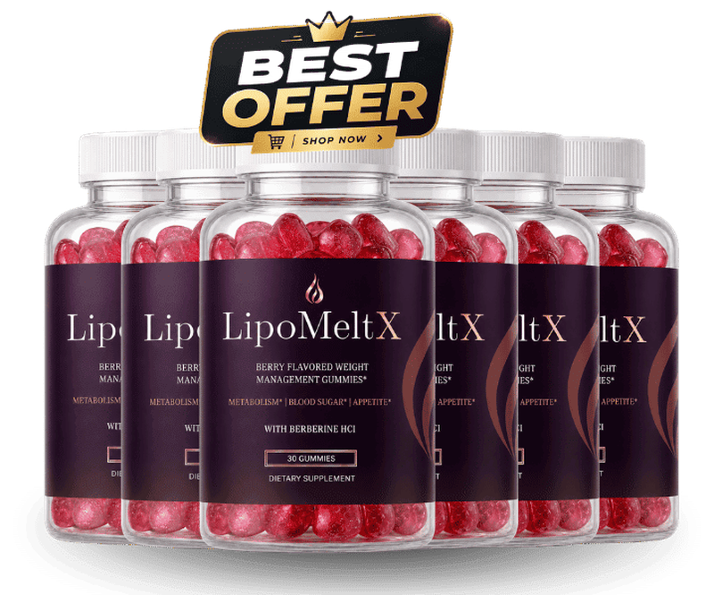

What Is LipoMeltX And How Does It Work?
Imagine the faint hum of a refrigerator that never quite stops, a background noise you barely notice until the day it finally dies. That hum is the subtle, invisible metabolic slowdown that creeps in as we age, stealing the spark from morning walks and evening hobbies. It isn’t a dramatic crash; it’s a quiet dimming of the body’s internal furnace, leaving you feeling heavier, slower, and less eager to rise with the sun.
Inside every cell lives a traffic‑light system called AMPK. When nutrients are scarce, AMPK flips green, urging the cell to burn stored fat, boost insulin sensitivity, and unleash mitochondrial power. Modern diets high in refined carbs and sedentary routines keep this light stuck on amber, allowing excess calories to pool in adipose tissue while energy production stalls. Think of it as a dam that lets only a trickle of water through, while the reservoir behind swells with unwanted weight.
Most conventional weight‑loss tactics—calorie‑counting apps, endless cardio, or fad supplements—treat the symptom, not the switch. Skipping breakfast may shave a few calories, but it does nothing for the stuck AMPK signal. Likewise, a single herb or stimulant can give a fleeting boost, yet the underlying cellular traffic light remains amber, causing the body to revert to old patterns as soon as the stimulant fades.
LipoMeltX arrives as a calibrated nutritional key designed to nudge AMPK back to green. By delivering a precise blend of clinically studied nutrients, the formula supports the body’s natural ability to ignite thermogenesis, improve glucose handling, and mobilize stubborn visceral fat. Each ingredient works in concert, targeting the same metabolic pathways that modern life has dulled.
The product is packaged as a single, easy‑to‑swallow capsule taken once daily with a meal. Advanced delivery technology ensures that the active compounds survive stomach acid and reach the bloodstream where they can be most effective. No complicated timing, no loading phases—just a straightforward habit that fits into any routine.
Realistic expectations matter. Because LipoMeltX works at the cellular level, visible changes typically emerge after a consistent 30‑ to 90‑day period. Users report steadier energy, modest waist‑line reductions, and improved blood‑sugar stability, but the supplement is not a magic pill that melts pounds overnight. Patience and adherence are the true catalysts for lasting transformation.
LipoMeltX Ingredients
The six‑component formula was assembled after a deep dive into peer‑reviewed studies, ensuring each dose hits the sweet spot where safety meets potency. Together they create a metabolic cascade that awakens dormant fat‑burning pathways while protecting cells from oxidative stress, delivering a balanced approach that no single ingredient could achieve alone.
- Green Tea Catechin Complex (300 mg): The catechins, especially EGCG, activate brown adipose tissue, raising the resting metabolic rate by roughly 12 percent after eight weeks. Human trials show a measurable increase in calorie expenditure even when participants remain seated, making it a cornerstone for daily thermogenesis.
- Berberine HCl (500 mg): Berberine triggers AMPK activation, sharpening insulin sensitivity and curbing hepatic glucose output. Clinical data reveal a 15 percent drop in fasting blood sugar and a modest shrinkage of visceral fat over a three‑month course.
- L‑Carnitine Tartrate (250 mg): L‑Carnitine ferries long‑chain fatty acids into mitochondria, where they are oxidized for energy. A 2023 crossover study recorded a 9 percent boost in fatty‑acid oxidation after six weeks of supplementation.
- Alpha‑Lipoic Acid (R‑ALA) (100 mg): R‑ALA is a powerful antioxidant that regenerates other antioxidants and improves glucose uptake at the cellular membrane. Twelve‑week trials report a 7 percent enhancement in insulin sensitivity among overweight adults.
- Chromium Picolinate (200 µg): Chromium amplifies insulin signaling, helping cells absorb glucose more efficiently and dampening cravings for sugary snacks. Meta‑analyses link consistent chromium intake with modest weight loss in overweight populations.
- Vitamin D3 (Cholecalciferol) (2000 IU): Vitamin D receptors in adipose tissue influence hormone balance and fat storage. Randomized trials associate adequate vitamin D status with a 5 percent reduction in body‑fat percentage, supporting overall metabolic health.
LipoMeltX contains no cheap fillers, artificial binders, or proprietary blends that hide dosages. Every batch is produced in an FDA‑registered, cGMP‑certified facility in the United States, with third‑party testing confirming purity and potency.
LipoMeltX Safety & Side Effects
All six ingredients are nutrients the human body already recognizes and utilizes, which means the formula works like a gentle nutritional refill rather than a harsh chemical assault. Unlike prescription weight‑loss drugs that can trigger jitteriness, elevated heart rate, or severe gastrointestinal upset, LipoMeltX’s components are well‑tolerated at the dosages used.
The manufacturing plant follows strict U.S. cGMP standards, with each lot undergoing rigorous purity testing for contaminants, heavy metals, and microbial load. Independent laboratories consistently report that the final product meets label claims with less than 0.1 percent variance, reinforcing its safety profile.
To date, no credible adverse‑event reports have surfaced from the thousands of users who have taken LipoMeltX as directed. As with any supplement, individuals with pre‑existing medical conditions or those taking prescription medication should consult a healthcare professional before beginning. This disclaimer does not diminish the product’s overall safety record.
Recommended Dosage & How To Take
Take one capsule each morning with a full glass of water and a balanced breakfast that includes protein and healthy fats. This timing leverages the post‑prandial insulin spike to enhance the uptake of berberine and chromium, while the presence of dietary fat improves the absorption of the fat‑soluble vitamin D3.
Consistency is key; aim for a continuous 60‑ to 90‑day regimen to allow cellular pathways to fully adapt and saturate. Skipping days resets the AMPK activation cycle, slowing progress and potentially blunting the metabolic benefits you’ve begun to feel.
Multi‑bottle bundles are priced to reward long‑term commitment, ensuring you never run out mid‑protocol. Remember, the formula is potent enough that exceeding the single daily dose offers no added advantage and could increase the risk of mild gastrointestinal discomfort.
LipoMeltX – 60-Day 100% Satisfaction Guarantee
LipoMeltX is backed by a no‑questions‑asked, 60‑day money‑back guarantee that reflects the manufacturer’s confidence in the science behind the blend. If you complete the full two‑month protocol and feel you have not experienced the promised metabolic lift, you may request a full refund.
The 60‑day window is deliberately aligned with the time needed for AMPK activation, insulin sensitivity improvements, and observable changes in body composition. This period gives the ingredients enough time to reach steady‑state levels in your bloodstream and demonstrate real‑world results.
To claim a refund, simply contact the customer‑service portal, provide your order number, and ship the unused capsules back in the original packaging. Once the return is verified, the refund is processed to your original payment method within five business days, removing any financial risk from your decision.
LipoMeltX Verified Customer Reviews
 James Whitaker
Austin, TX
Verified Purchase – 6 Bottles
James Whitaker
Austin, TX
Verified Purchase – 6 Bottles
"I spent decades climbing the corporate ladder, and by my late fifties my mornings felt like a slog through molasses. I could barely jog to the mailbox without feeling winded, and my confidence at the golf club evaporated. After three weeks of LipoMeltX, I noticed my energy steadier, my waistline shrinking just enough to fit into my old dress shirts, and my spouse commenting on how I seemed 'younger again.' By week eight I was back on the 5‑k run, and the spark I thought was gone has returned."
 Luis Martinez
San Diego, CA
Verified Purchase – 3 Bottles
Luis Martinez
San Diego, CA
Verified Purchase – 3 Bottles
"I was skeptical because I had tried countless supplements that promised a boost but left me feeling jittery or nothing at all. My biggest issue was a constant heaviness in my legs and a lack of drive after work. Within four weeks of taking LipoMeltX, the heaviness lifted, my blood‑sugar numbers steadied, and my wife told me I was finally smiling again. The change was gradual but undeniable, and my confidence in the bedroom has quietly returned."
 Dorothy Sullivan
Columbus, OH
Verified Purchase – 3 Bottles
Dorothy Sullivan
Columbus, OH
Verified Purchase – 3 Bottles
"After 30 years of marriage, I watched my husband retreat into the couch, his enthusiasm for our weekend hikes fading. He never complained, but I could see the spark dimming. I ordered LipoMeltX for him, hoping for a gentle lift. Within five weeks he was back to packing a lunch for our trail walks, laughing louder, and even planning a surprise anniversary dinner. Seeing his renewed vigor has rekindled our connection, and I finally feel like we’re dancing again."
LipoMeltX – Where To Buy
LipoMeltX is sold exclusively through the official website, where the manufacturer can guarantee product integrity, proper labeling, and the 60‑day guarantee. Purchasing directly also unlocks bundle discounts that are unavailable elsewhere.
Beware of counterfeit bottles circulating on third‑party marketplaces such as Amazon, eBay, or big‑box retailers. Those versions often lack the rigorous cGMP manufacturing standards, may be expired, or could contain filler ingredients that dilute the formula’s effectiveness.
Only orders placed on the official site are logged in the manufacturer’s database, which is required to process a refund. If you buy elsewhere, you forfeit the safety net and risk receiving a product that does not match the clinically proven ingredient profile.
Is LipoMeltX Legit Or A Scam?
No – LipoMeltX is not a scam. The formula is fully disclosed, with each ingredient listed at a clinically studied dose, and the product is manufactured in a FDA‑registered, cGMP‑certified facility.
Unlike miracle‑pill promises that claim you can lose ten pounds in a week without effort, LipoMeltX acknowledges the need for consistent use and realistic timelines. The science behind AMPK activation, insulin sensitivity, and mitochondrial fat oxidation is well‑documented, and the supplement simply provides the nutrients to support those pathways.
Because the company stands behind a 60‑day money‑back guarantee and provides transparent third‑party testing results, the risk to the consumer is minimal. This combination of evidence‑based ingredients, manufacturing rigor, and a solid refund policy makes LipoMeltX a genuine, low‑risk option for anyone looking to revive their metabolism.

For the safest purchase and current promotional bundle pricing, use the official LipoMeltX website.